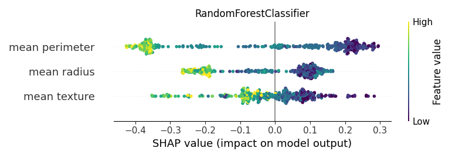

Note
Click here to download the full example code
Shap - Main 02¶
Computing SHAP values for different classifiers to understand which type of SHAP explainers can be used with the different algorithms.


- 


Out:
<IPython.core.display.HTML object>
--------------------------------------------------------------------------------
Classifier: GaussianNB()
Kernel type: <class 'shap.explainers._kernel.Kernel'>
0%| | 0/375 [00:00<?, ?it/s]
3%|####5 | 10/375 [00:00<00:03, 99.29it/s]
5%|#########1 | 20/375 [00:00<00:03, 99.70it/s]
8%|#############7 | 30/375 [00:00<00:03, 97.61it/s]
11%|##################3 | 40/375 [00:00<00:03, 93.12it/s]
13%|######################9 | 50/375 [00:00<00:03, 84.54it/s]
16%|########################### | 59/375 [00:00<00:03, 86.19it/s]
18%|###############################6 | 69/375 [00:00<00:03, 87.97it/s]
21%|####################################2 | 79/375 [00:00<00:03, 91.53it/s]
24%|#########################################2 | 90/375 [00:00<00:03, 94.22it/s]
27%|#############################################6 | 100/375 [00:01<00:02, 95.66it/s]
30%|##################################################6 | 111/375 [00:01<00:02, 97.30it/s]
32%|#######################################################1 | 121/375 [00:01<00:02, 96.96it/s]
35%|###########################################################7 | 131/375 [00:01<00:02, 96.45it/s]
38%|################################################################2 | 141/375 [00:01<00:02, 96.08it/s]
40%|####################################################################8 | 151/375 [00:01<00:02, 96.10it/s]
43%|#########################################################################4 | 161/375 [00:01<00:02, 95.84it/s]
46%|#############################################################################9 | 171/375 [00:01<00:02, 96.21it/s]
49%|##################################################################################9 | 182/375 [00:01<00:01, 97.67it/s]
51%|######################################################################################## | 193/375 [00:02<00:01, 98.13it/s]
54%|############################################################################################# | 204/375 [00:02<00:01, 98.91it/s]
57%|#################################################################################################5 | 214/375 [00:02<00:01, 98.39it/s]
60%|######################################################################################################1 | 224/375 [00:02<00:01, 97.72it/s]
62%|##########################################################################################################7 | 234/375 [00:02<00:01, 97.26it/s]
65%|###############################################################################################################2 | 244/375 [00:02<00:01, 96.18it/s]
68%|###################################################################################################################8 | 254/375 [00:02<00:01, 96.71it/s]
70%|########################################################################################################################3 | 264/375 [00:02<00:01, 97.11it/s]
73%|############################################################################################################################9 | 274/375 [00:02<00:01, 97.95it/s]
76%|#################################################################################################################################5 | 284/375 [00:02<00:00, 98.55it/s]
78%|###################################################################################################################################### | 294/375 [00:03<00:00, 98.67it/s]
81%|########################################################################################################################################### | 305/375 [00:03<00:00, 99.09it/s]
84%|###############################################################################################################################################6 | 315/375 [00:03<00:00, 98.78it/s]
87%|####################################################################################################################################################2 | 325/375 [00:03<00:00, 98.85it/s]
89%|########################################################################################################################################################7 | 335/375 [00:03<00:00, 98.61it/s]
92%|#############################################################################################################################################################3 | 345/375 [00:03<00:00, 98.42it/s]
95%|#################################################################################################################################################################8 | 355/375 [00:03<00:00, 98.02it/s]
97%|######################################################################################################################################################################4 | 365/375 [00:03<00:00, 97.45it/s]
100%|###########################################################################################################################################################################| 375/375 [00:03<00:00, 97.91it/s]
100%|###########################################################################################################################################################################| 375/375 [00:03<00:00, 96.39it/s]
[[-0.2143723 -0.19038141 -0.22085071]
[ 0.15549902 0.04950881 0.16806476]
[-0.31382936 0.06041049 -0.31223003]
...
[-0.10057844 0.0701043 -0.13986502]
[ 0.14968807 0.0257892 0.15703457]
[-0.19725508 0.15063206 -0.2459545 ]]
base value: 0.6256054145239283
0%| | 0/375 [00:00<?, ?it/s]
3%|####5 | 10/375 [00:00<00:03, 99.99it/s]
5%|#########1 | 20/375 [00:00<00:03, 99.69it/s]
8%|##############2 | 31/375 [00:00<00:03, 99.98it/s]
11%|##################8 | 41/375 [00:00<00:03, 99.23it/s]
14%|#######################3 | 51/375 [00:00<00:03, 97.11it/s]
16%|###########################9 | 61/375 [00:00<00:03, 94.33it/s]
19%|################################5 | 71/375 [00:00<00:03, 93.56it/s]
22%|#####################################1 | 81/375 [00:00<00:03, 94.07it/s]
24%|#########################################7 | 91/375 [00:00<00:03, 94.43it/s]
27%|##############################################5 | 102/375 [00:01<00:02, 96.19it/s]
30%|###################################################5 | 113/375 [00:01<00:02, 97.24it/s]
33%|########################################################5 | 124/375 [00:01<00:02, 98.21it/s]
36%|#############################################################1 | 134/375 [00:01<00:02, 98.45it/s]
38%|#################################################################6 | 144/375 [00:01<00:02, 98.04it/s]
41%|######################################################################2 | 154/375 [00:01<00:02, 98.32it/s]
44%|##########################################################################7 | 164/375 [00:01<00:02, 97.27it/s]
46%|###############################################################################3 | 174/375 [00:01<00:02, 96.94it/s]
49%|###################################################################################9 | 184/375 [00:01<00:01, 96.98it/s]
52%|########################################################################################4 | 194/375 [00:01<00:01, 97.30it/s]
55%|#############################################################################################4 | 205/375 [00:02<00:01, 98.14it/s]
57%|################################################################################################## | 215/375 [00:02<00:01, 98.35it/s]
60%|######################################################################################################6 | 225/375 [00:02<00:01, 98.54it/s]
63%|###########################################################################################################1 | 235/375 [00:02<00:01, 97.83it/s]
65%|###############################################################################################################7 | 245/375 [00:02<00:01, 96.21it/s]
68%|####################################################################################################################2 | 255/375 [00:02<00:01, 95.37it/s]
71%|########################################################################################################################8 | 265/375 [00:02<00:01, 93.44it/s]
73%|#############################################################################################################################4 | 275/375 [00:02<00:01, 92.16it/s]
76%|#################################################################################################################################9 | 285/375 [00:02<00:00, 91.78it/s]
79%|######################################################################################################################################5 | 295/375 [00:03<00:00, 93.30it/s]
81%|########################################################################################################################################### | 305/375 [00:03<00:00, 94.67it/s]
84%|###############################################################################################################################################6 | 315/375 [00:03<00:00, 95.07it/s]
87%|####################################################################################################################################################2 | 325/375 [00:03<00:00, 95.94it/s]
89%|########################################################################################################################################################7 | 335/375 [00:03<00:00, 94.38it/s]
92%|#############################################################################################################################################################3 | 345/375 [00:03<00:00, 92.54it/s]
95%|#################################################################################################################################################################8 | 355/375 [00:03<00:00, 91.36it/s]
97%|######################################################################################################################################################################4 | 365/375 [00:03<00:00, 91.23it/s]
100%|###########################################################################################################################################################################| 375/375 [00:03<00:00, 91.14it/s]
100%|###########################################################################################################################################################################| 375/375 [00:03<00:00, 95.36it/s]
--------------------------------------------------------------------------------
Classifier: LogisticRegression()
Kernel type: <class 'shap.explainers._kernel.Kernel'>
0%| | 0/375 [00:00<?, ?it/s]
3%|####5 | 10/375 [00:00<00:03, 96.12it/s]
5%|#########1 | 20/375 [00:00<00:03, 96.35it/s]
8%|#############7 | 30/375 [00:00<00:03, 96.25it/s]
11%|##################3 | 40/375 [00:00<00:03, 94.78it/s]
13%|######################9 | 50/375 [00:00<00:03, 93.65it/s]
16%|###########################5 | 60/375 [00:00<00:03, 92.99it/s]
19%|################################1 | 70/375 [00:00<00:03, 92.06it/s]
21%|####################################6 | 80/375 [00:00<00:03, 91.42it/s]
24%|#########################################2 | 90/375 [00:00<00:03, 91.78it/s]
27%|#############################################6 | 100/375 [00:01<00:02, 93.90it/s]
30%|##################################################6 | 111/375 [00:01<00:02, 96.03it/s]
32%|#######################################################1 | 121/375 [00:01<00:02, 97.16it/s]
35%|###########################################################7 | 131/375 [00:01<00:02, 97.70it/s]
38%|################################################################2 | 141/375 [00:01<00:02, 97.80it/s]
40%|####################################################################8 | 151/375 [00:01<00:02, 97.59it/s]
43%|#########################################################################4 | 161/375 [00:01<00:02, 97.44it/s]
46%|#############################################################################9 | 171/375 [00:01<00:02, 97.07it/s]
48%|##################################################################################5 | 181/375 [00:01<00:02, 93.29it/s]
51%|####################################################################################### | 191/375 [00:02<00:01, 93.85it/s]
54%|############################################################################################1 | 202/375 [00:02<00:01, 95.75it/s]
57%|################################################################################################6 | 212/375 [00:02<00:01, 95.16it/s]
59%|#####################################################################################################2 | 222/375 [00:02<00:01, 83.04it/s]
62%|#########################################################################################################3 | 231/375 [00:02<00:01, 81.46it/s]
64%|#############################################################################################################8 | 241/375 [00:02<00:01, 84.55it/s]
67%|##################################################################################################################4 | 251/375 [00:02<00:01, 86.61it/s]
69%|######################################################################################################################5 | 260/375 [00:02<00:01, 71.92it/s]
72%|##########################################################################################################################6 | 269/375 [00:03<00:01, 74.50it/s]
74%|###############################################################################################################################2 | 279/375 [00:03<00:01, 80.74it/s]
77%|###################################################################################################################################7 | 289/375 [00:03<00:01, 85.16it/s]
80%|########################################################################################################################################3 | 299/375 [00:03<00:00, 87.55it/s]
82%|############################################################################################################################################4 | 308/375 [00:03<00:00, 87.02it/s]
85%|################################################################################################################################################5 | 317/375 [00:03<00:00, 85.69it/s]
87%|####################################################################################################################################################6 | 326/375 [00:03<00:00, 73.13it/s]
89%|########################################################################################################################################################3 | 334/375 [00:03<00:00, 71.97it/s]
91%|############################################################################################################################################################4 | 343/375 [00:03<00:00, 76.02it/s]
94%|################################################################################################################################################################9 | 353/375 [00:04<00:00, 82.21it/s]
97%|#####################################################################################################################################################################9 | 364/375 [00:04<00:00, 87.93it/s]
100%|###########################################################################################################################################################################| 375/375 [00:04<00:00, 91.77it/s]
100%|###########################################################################################################################################################################| 375/375 [00:04<00:00, 88.49it/s]
[[ 0.11805943 -0.19497642 -0.52694509]
[-0.25974175 0.04205357 0.61331924]
[ 0.11618402 0.09841558 -0.37862677]
...
[-0.01411525 0.04658801 -0.35991104]
[ 0.06238287 0.02752441 0.09341777]
[ 0.03816372 0.14229031 -0.38919416]]
base value: 0.6042417816207096
0%| | 0/375 [00:00<?, ?it/s]
3%|##### | 11/375 [00:00<00:03, 101.41it/s]
6%|########## | 22/375 [00:00<00:03, 98.46it/s]
9%|##############6 | 32/375 [00:00<00:03, 97.04it/s]
11%|###################2 | 42/375 [00:00<00:03, 97.06it/s]
14%|#######################8 | 52/375 [00:00<00:03, 92.24it/s]
17%|############################4 | 62/375 [00:00<00:03, 89.58it/s]
19%|################################# | 72/375 [00:00<00:03, 90.80it/s]
22%|#####################################6 | 82/375 [00:00<00:03, 93.52it/s]
25%|##########################################1 | 92/375 [00:00<00:03, 93.78it/s]
27%|##############################################5 | 102/375 [00:01<00:02, 93.36it/s]
30%|################################################### | 112/375 [00:01<00:02, 92.07it/s]
33%|#######################################################6 | 122/375 [00:01<00:02, 93.01it/s]
35%|############################################################1 | 132/375 [00:01<00:02, 94.22it/s]
38%|################################################################7 | 142/375 [00:01<00:02, 95.06it/s]
41%|#####################################################################3 | 152/375 [00:01<00:02, 95.11it/s]
43%|#########################################################################8 | 162/375 [00:01<00:02, 95.97it/s]
46%|##############################################################################8 | 173/375 [00:01<00:02, 97.51it/s]
49%|###################################################################################9 | 184/375 [00:01<00:01, 98.93it/s]
52%|########################################################################################9 | 195/375 [00:02<00:01, 99.51it/s]
55%|#############################################################################################9 | 206/375 [00:02<00:01, 99.72it/s]
58%|##################################################################################################4 | 216/375 [00:02<00:01, 99.24it/s]
60%|####################################################################################################### | 226/375 [00:02<00:01, 98.61it/s]
63%|###########################################################################################################6 | 236/375 [00:02<00:01, 98.44it/s]
66%|################################################################################################################1 | 246/375 [00:02<00:01, 98.13it/s]
68%|####################################################################################################################7 | 256/375 [00:02<00:01, 97.82it/s]
71%|#########################################################################################################################7 | 267/375 [00:02<00:01, 98.78it/s]
74%|##############################################################################################################################7 | 278/375 [00:02<00:00, 99.44it/s]
77%|################################################################################################################################### | 289/375 [00:02<00:00, 100.17it/s]
80%|######################################################################################################################################## | 300/375 [00:03<00:00, 100.49it/s]
83%|#############################################################################################################################################8 | 311/375 [00:03<00:00, 99.79it/s]
86%|##################################################################################################################################################3 | 321/375 [00:03<00:00, 98.73it/s]
88%|######################################################################################################################################################9 | 331/375 [00:03<00:00, 98.25it/s]
91%|###########################################################################################################################################################4 | 341/375 [00:03<00:00, 96.53it/s]
94%|################################################################################################################################################################ | 351/375 [00:03<00:00, 93.57it/s]
96%|####################################################################################################################################################################6 | 361/375 [00:03<00:00, 92.01it/s]
99%|#########################################################################################################################################################################1 | 371/375 [00:03<00:00, 93.20it/s]
100%|###########################################################################################################################################################################| 375/375 [00:03<00:00, 96.19it/s]
--------------------------------------------------------------------------------
Classifier: DecisionTreeClassifier(random_state=0)
Kernel type: <class 'shap.explainers._kernel.Kernel'>
0%| | 0/375 [00:00<?, ?it/s]
3%|####5 | 10/375 [00:00<00:03, 93.00it/s]
5%|#########1 | 20/375 [00:00<00:04, 77.53it/s]
8%|#############7 | 30/375 [00:00<00:04, 83.13it/s]
11%|##################3 | 40/375 [00:00<00:03, 86.61it/s]
13%|######################9 | 50/375 [00:00<00:03, 88.40it/s]
16%|###########################5 | 60/375 [00:00<00:03, 90.49it/s]
19%|################################1 | 70/375 [00:00<00:03, 93.12it/s]
22%|#####################################1 | 81/375 [00:00<00:03, 95.34it/s]
25%|##########################################1 | 92/375 [00:01<00:02, 97.09it/s]
27%|##############################################9 | 103/375 [00:01<00:02, 98.56it/s]
30%|###################################################5 | 113/375 [00:01<00:02, 97.85it/s]
33%|######################################################## | 123/375 [00:01<00:02, 93.84it/s]
35%|############################################################6 | 133/375 [00:01<00:02, 91.20it/s]
38%|#################################################################2 | 143/375 [00:01<00:02, 89.18it/s]
41%|#####################################################################3 | 152/375 [00:01<00:02, 88.15it/s]
43%|#########################################################################4 | 161/375 [00:01<00:02, 88.42it/s]
45%|#############################################################################5 | 170/375 [00:01<00:02, 88.61it/s]
48%|################################################################################## | 180/375 [00:01<00:02, 89.82it/s]
51%|######################################################################################6 | 190/375 [00:02<00:02, 92.22it/s]
53%|###########################################################################################2 | 200/375 [00:02<00:01, 90.97it/s]
56%|###############################################################################################7 | 210/375 [00:02<00:01, 88.74it/s]
59%|####################################################################################################3 | 220/375 [00:02<00:01, 90.12it/s]
61%|########################################################################################################8 | 230/375 [00:02<00:01, 91.62it/s]
64%|#############################################################################################################4 | 240/375 [00:02<00:01, 92.06it/s]
67%|################################################################################################################## | 250/375 [00:02<00:01, 92.73it/s]
70%|####################################################################################################################### | 261/375 [00:02<00:01, 95.21it/s]
73%|############################################################################################################################ | 272/375 [00:02<00:01, 96.76it/s]
75%|################################################################################################################################5 | 282/375 [00:03<00:00, 97.68it/s]
78%|#####################################################################################################################################1 | 292/375 [00:03<00:00, 97.52it/s]
81%|#########################################################################################################################################7 | 302/375 [00:03<00:00, 95.74it/s]
83%|##############################################################################################################################################2 | 312/375 [00:03<00:00, 96.40it/s]
86%|###################################################################################################################################################2 | 323/375 [00:03<00:00, 97.52it/s]
89%|########################################################################################################################################################3 | 334/375 [00:03<00:00, 98.28it/s]
92%|############################################################################################################################################################8 | 344/375 [00:03<00:00, 98.10it/s]
95%|#################################################################################################################################################################8 | 355/375 [00:03<00:00, 98.96it/s]
97%|######################################################################################################################################################################4 | 365/375 [00:03<00:00, 99.26it/s]
100%|###########################################################################################################################################################################| 375/375 [00:04<00:00, 93.59it/s]
[[ 0.02166667 -0.02333333 -0.58833333]
[-0.01333333 0.08666667 0.33666667]
[ 0.02166667 0.43166667 -0.04333333]
...
[ 0.02166667 -0.11833333 -0.49333333]
[-0.36333333 -0.07833333 -0.14833333]
[ 0.02166667 0.06666667 -0.67833333]]
base value: 0.5900000000000001
0%| | 0/375 [00:00<?, ?it/s]
3%|##### | 11/375 [00:00<00:03, 101.85it/s]
6%|########## | 22/375 [00:00<00:03, 101.28it/s]
9%|############### | 33/375 [00:00<00:03, 100.69it/s]
12%|#################### | 44/375 [00:00<00:03, 100.78it/s]
15%|######################### | 55/375 [00:00<00:03, 100.83it/s]
18%|############################## | 66/375 [00:00<00:03, 100.77it/s]
21%|###################################1 | 77/375 [00:00<00:02, 100.57it/s]
23%|########################################1 | 88/375 [00:00<00:02, 100.39it/s]
26%|#############################################1 | 99/375 [00:00<00:02, 100.26it/s]
29%|##################################################1 | 110/375 [00:01<00:02, 99.90it/s]
32%|######################################################7 | 120/375 [00:01<00:02, 99.50it/s]
35%|###########################################################2 | 130/375 [00:01<00:02, 97.39it/s]
37%|###############################################################8 | 140/375 [00:01<00:02, 97.31it/s]
40%|####################################################################4 | 150/375 [00:01<00:02, 94.80it/s]
43%|########################################################################9 | 160/375 [00:01<00:02, 94.92it/s]
45%|#############################################################################5 | 170/375 [00:01<00:02, 94.44it/s]
48%|################################################################################## | 180/375 [00:01<00:02, 93.61it/s]
51%|######################################################################################6 | 190/375 [00:01<00:01, 95.43it/s]
54%|###########################################################################################6 | 201/375 [00:02<00:01, 96.85it/s]
56%|################################################################################################2 | 211/375 [00:02<00:01, 87.44it/s]
59%|####################################################################################################7 | 221/375 [00:02<00:01, 90.80it/s]
62%|#########################################################################################################3 | 231/375 [00:02<00:01, 93.35it/s]
64%|#############################################################################################################8 | 241/375 [00:02<00:01, 94.96it/s]
67%|##################################################################################################################9 | 252/375 [00:02<00:01, 96.78it/s]
70%|#######################################################################################################################4 | 262/375 [00:02<00:01, 97.61it/s]
73%|############################################################################################################################4 | 273/375 [00:02<00:01, 98.35it/s]
75%|################################################################################################################################# | 283/375 [00:02<00:00, 97.98it/s]
78%|###################################################################################################################################### | 294/375 [00:03<00:00, 98.88it/s]
81%|########################################################################################################################################### | 305/375 [00:03<00:00, 99.50it/s]
84%|###############################################################################################################################################6 | 315/375 [00:03<00:00, 90.56it/s]
87%|####################################################################################################################################################2 | 325/375 [00:03<00:00, 91.86it/s]
89%|########################################################################################################################################################7 | 335/375 [00:03<00:00, 93.09it/s]
92%|#############################################################################################################################################################3 | 345/375 [00:03<00:00, 94.23it/s]
95%|#################################################################################################################################################################8 | 355/375 [00:03<00:00, 95.87it/s]
97%|######################################################################################################################################################################4 | 365/375 [00:03<00:00, 96.33it/s]
100%|###########################################################################################################################################################################| 375/375 [00:03<00:00, 97.40it/s]
100%|###########################################################################################################################################################################| 375/375 [00:03<00:00, 96.57it/s]
--------------------------------------------------------------------------------
Classifier: RandomForestClassifier(random_state=0)
Kernel type: <class 'shap.explainers._kernel.Kernel'>
0%| | 0/375 [00:00<?, ?it/s]
1%|#8 | 4/375 [00:00<00:09, 38.02it/s]
2%|###6 | 8/375 [00:00<00:09, 37.85it/s]
3%|#####5 | 12/375 [00:00<00:09, 37.64it/s]
4%|#######3 | 16/375 [00:00<00:09, 37.82it/s]
5%|#########1 | 20/375 [00:00<00:09, 37.66it/s]
6%|########### | 24/375 [00:00<00:09, 37.80it/s]
7%|############8 | 28/375 [00:00<00:09, 37.66it/s]
9%|##############6 | 32/375 [00:00<00:09, 37.61it/s]
10%|################5 | 36/375 [00:00<00:09, 37.65it/s]
11%|##################3 | 40/375 [00:01<00:08, 37.68it/s]
12%|####################1 | 44/375 [00:01<00:08, 37.80it/s]
13%|###################### | 48/375 [00:01<00:08, 37.61it/s]
14%|#######################8 | 52/375 [00:01<00:08, 37.55it/s]
15%|#########################6 | 56/375 [00:01<00:08, 37.50it/s]
16%|###########################5 | 60/375 [00:01<00:08, 37.67it/s]
17%|#############################3 | 64/375 [00:01<00:08, 37.80it/s]
18%|###############################1 | 68/375 [00:01<00:08, 37.82it/s]
19%|################################# | 72/375 [00:01<00:08, 37.79it/s]
20%|##################################8 | 76/375 [00:02<00:07, 37.78it/s]
21%|####################################6 | 80/375 [00:02<00:07, 37.87it/s]
22%|######################################5 | 84/375 [00:02<00:07, 37.72it/s]
23%|########################################3 | 88/375 [00:02<00:07, 37.64it/s]
25%|##########################################1 | 92/375 [00:02<00:07, 37.78it/s]
26%|############################################ | 96/375 [00:02<00:07, 37.76it/s]
27%|#############################################6 | 100/375 [00:02<00:07, 37.54it/s]
28%|###############################################4 | 104/375 [00:02<00:07, 37.49it/s]
29%|#################################################2 | 108/375 [00:02<00:07, 37.49it/s]
30%|################################################### | 112/375 [00:02<00:07, 37.46it/s]
31%|####################################################8 | 116/375 [00:03<00:06, 37.65it/s]
32%|######################################################7 | 120/375 [00:03<00:06, 37.68it/s]
33%|########################################################5 | 124/375 [00:03<00:06, 37.63it/s]
34%|##########################################################3 | 128/375 [00:03<00:06, 36.91it/s]
35%|############################################################1 | 132/375 [00:03<00:06, 36.54it/s]
36%|############################################################## | 136/375 [00:03<00:06, 34.69it/s]
37%|###############################################################8 | 140/375 [00:03<00:06, 33.92it/s]
38%|#################################################################6 | 144/375 [00:03<00:06, 34.15it/s]
39%|###################################################################4 | 148/375 [00:03<00:06, 34.97it/s]
41%|#####################################################################3 | 152/375 [00:04<00:06, 35.95it/s]
42%|#######################################################################1 | 156/375 [00:04<00:06, 36.07it/s]
43%|########################################################################9 | 160/375 [00:04<00:06, 35.66it/s]
44%|##########################################################################7 | 164/375 [00:04<00:05, 35.87it/s]
45%|############################################################################6 | 168/375 [00:04<00:05, 36.51it/s]
46%|##############################################################################4 | 172/375 [00:04<00:05, 36.97it/s]
47%|################################################################################2 | 176/375 [00:04<00:05, 36.89it/s]
48%|################################################################################## | 180/375 [00:04<00:05, 36.56it/s]
49%|###################################################################################9 | 184/375 [00:04<00:05, 37.04it/s]
50%|#####################################################################################7 | 188/375 [00:05<00:05, 36.63it/s]
51%|#######################################################################################5 | 192/375 [00:05<00:05, 36.26it/s]
52%|#########################################################################################3 | 196/375 [00:05<00:04, 36.68it/s]
53%|###########################################################################################2 | 200/375 [00:05<00:04, 36.96it/s]
54%|############################################################################################# | 204/375 [00:05<00:04, 37.29it/s]
55%|##############################################################################################8 | 208/375 [00:05<00:04, 37.53it/s]
57%|################################################################################################6 | 212/375 [00:05<00:04, 37.70it/s]
58%|##################################################################################################4 | 216/375 [00:05<00:04, 37.70it/s]
59%|####################################################################################################3 | 220/375 [00:05<00:04, 37.66it/s]
60%|######################################################################################################1 | 224/375 [00:06<00:03, 37.79it/s]
61%|#######################################################################################################9 | 228/375 [00:06<00:03, 37.88it/s]
62%|#########################################################################################################7 | 232/375 [00:06<00:03, 37.52it/s]
63%|###########################################################################################################6 | 236/375 [00:06<00:03, 37.41it/s]
64%|#############################################################################################################4 | 240/375 [00:06<00:03, 37.40it/s]
65%|###############################################################################################################2 | 244/375 [00:06<00:03, 37.61it/s]
66%|################################################################################################################# | 248/375 [00:06<00:03, 37.65it/s]
67%|##################################################################################################################9 | 252/375 [00:06<00:03, 37.67it/s]
68%|####################################################################################################################7 | 256/375 [00:06<00:03, 37.03it/s]
69%|######################################################################################################################5 | 260/375 [00:07<00:03, 37.34it/s]
70%|########################################################################################################################3 | 264/375 [00:07<00:02, 37.25it/s]
71%|##########################################################################################################################2 | 268/375 [00:07<00:02, 37.19it/s]
73%|############################################################################################################################ | 272/375 [00:07<00:02, 36.83it/s]
74%|#############################################################################################################################8 | 276/375 [00:07<00:02, 36.28it/s]
75%|###############################################################################################################################6 | 280/375 [00:07<00:02, 36.60it/s]
76%|#################################################################################################################################5 | 284/375 [00:07<00:02, 36.83it/s]
77%|###################################################################################################################################3 | 288/375 [00:07<00:02, 37.10it/s]
78%|#####################################################################################################################################1 | 292/375 [00:07<00:02, 37.30it/s]
79%|######################################################################################################################################9 | 296/375 [00:07<00:02, 36.96it/s]
80%|########################################################################################################################################8 | 300/375 [00:08<00:02, 37.19it/s]
81%|##########################################################################################################################################6 | 304/375 [00:08<00:01, 37.46it/s]
82%|############################################################################################################################################4 | 308/375 [00:08<00:01, 37.54it/s]
83%|##############################################################################################################################################2 | 312/375 [00:08<00:01, 37.44it/s]
84%|################################################################################################################################################ | 316/375 [00:08<00:01, 37.63it/s]
85%|#################################################################################################################################################9 | 320/375 [00:08<00:01, 37.88it/s]
86%|###################################################################################################################################################7 | 324/375 [00:08<00:01, 37.94it/s]
87%|#####################################################################################################################################################5 | 328/375 [00:08<00:01, 37.88it/s]
89%|#######################################################################################################################################################3 | 332/375 [00:08<00:01, 37.39it/s]
90%|#########################################################################################################################################################2 | 336/375 [00:09<00:01, 37.28it/s]
91%|########################################################################################################################################################### | 340/375 [00:09<00:00, 37.21it/s]
92%|############################################################################################################################################################8 | 344/375 [00:09<00:00, 36.55it/s]
93%|##############################################################################################################################################################6 | 348/375 [00:09<00:00, 36.79it/s]
94%|################################################################################################################################################################5 | 352/375 [00:09<00:00, 36.80it/s]
95%|##################################################################################################################################################################3 | 356/375 [00:09<00:00, 36.97it/s]
96%|####################################################################################################################################################################1 | 360/375 [00:09<00:00, 37.10it/s]
97%|#####################################################################################################################################################################9 | 364/375 [00:09<00:00, 34.14it/s]
98%|#######################################################################################################################################################################8 | 368/375 [00:09<00:00, 35.06it/s]
99%|#########################################################################################################################################################################6 | 372/375 [00:10<00:00, 35.73it/s]
100%|###########################################################################################################################################################################| 375/375 [00:10<00:00, 37.03it/s]
[[-0.1986 -0.0435 -0.346 ]
[ 0.09825 0.07475 0.2289 ]
[-0.0143 0.2767 -0.1405 ]
...
[-0.01326667 -0.01676667 -0.29806667]
[-0.05613333 -0.14933333 -0.04263333]
[-0.21108333 0.10386667 -0.35088333]]
base value: 0.5881000000000001
0%| | 0/375 [00:00<?, ?it/s]
1%|#8 | 4/375 [00:00<00:09, 37.39it/s]
2%|###6 | 8/375 [00:00<00:09, 37.18it/s]
3%|#####5 | 12/375 [00:00<00:09, 36.46it/s]
4%|#######3 | 16/375 [00:00<00:09, 36.29it/s]
5%|#########1 | 20/375 [00:00<00:09, 36.08it/s]
6%|########### | 24/375 [00:00<00:09, 35.52it/s]
7%|############8 | 28/375 [00:00<00:09, 36.10it/s]
9%|##############6 | 32/375 [00:00<00:09, 36.52it/s]
10%|################5 | 36/375 [00:00<00:09, 36.58it/s]
11%|##################3 | 40/375 [00:01<00:09, 36.93it/s]
12%|####################1 | 44/375 [00:01<00:08, 37.28it/s]
13%|###################### | 48/375 [00:01<00:08, 37.38it/s]
14%|#######################8 | 52/375 [00:01<00:08, 37.46it/s]
15%|#########################6 | 56/375 [00:01<00:08, 37.33it/s]
16%|###########################5 | 60/375 [00:01<00:08, 36.83it/s]
17%|#############################3 | 64/375 [00:01<00:08, 36.69it/s]
18%|###############################1 | 68/375 [00:01<00:08, 36.35it/s]
19%|################################# | 72/375 [00:01<00:08, 36.56it/s]
20%|##################################8 | 76/375 [00:02<00:08, 36.90it/s]
21%|####################################6 | 80/375 [00:02<00:07, 37.25it/s]
22%|######################################5 | 84/375 [00:02<00:07, 37.29it/s]
23%|########################################3 | 88/375 [00:02<00:07, 37.36it/s]
25%|##########################################1 | 92/375 [00:02<00:07, 37.79it/s]
26%|############################################ | 96/375 [00:02<00:07, 37.88it/s]
27%|#############################################6 | 100/375 [00:02<00:07, 37.73it/s]
28%|###############################################4 | 104/375 [00:02<00:07, 37.66it/s]
29%|#################################################2 | 108/375 [00:02<00:07, 37.78it/s]
30%|################################################### | 112/375 [00:03<00:06, 37.88it/s]
31%|####################################################8 | 116/375 [00:03<00:06, 37.84it/s]
32%|######################################################7 | 120/375 [00:03<00:06, 37.91it/s]
33%|########################################################5 | 124/375 [00:03<00:06, 38.01it/s]
34%|##########################################################3 | 128/375 [00:03<00:06, 38.16it/s]
35%|############################################################1 | 132/375 [00:03<00:06, 38.14it/s]
36%|############################################################## | 136/375 [00:03<00:06, 38.02it/s]
37%|###############################################################8 | 140/375 [00:03<00:06, 37.96it/s]
38%|#################################################################6 | 144/375 [00:03<00:06, 37.85it/s]
39%|###################################################################4 | 148/375 [00:03<00:05, 37.93it/s]
41%|#####################################################################3 | 152/375 [00:04<00:05, 37.87it/s]
42%|#######################################################################1 | 156/375 [00:04<00:05, 37.83it/s]
43%|########################################################################9 | 160/375 [00:04<00:05, 37.69it/s]
44%|##########################################################################7 | 164/375 [00:04<00:05, 37.50it/s]
45%|############################################################################6 | 168/375 [00:04<00:05, 37.57it/s]
46%|##############################################################################4 | 172/375 [00:04<00:05, 37.62it/s]
47%|################################################################################2 | 176/375 [00:04<00:05, 37.44it/s]
48%|################################################################################## | 180/375 [00:04<00:05, 37.57it/s]
49%|###################################################################################9 | 184/375 [00:04<00:05, 37.60it/s]
50%|#####################################################################################7 | 188/375 [00:05<00:04, 37.64it/s]
51%|#######################################################################################5 | 192/375 [00:05<00:04, 37.77it/s]
52%|#########################################################################################3 | 196/375 [00:05<00:04, 37.66it/s]
53%|###########################################################################################2 | 200/375 [00:05<00:04, 37.64it/s]
54%|############################################################################################# | 204/375 [00:05<00:04, 37.53it/s]
55%|##############################################################################################8 | 208/375 [00:05<00:04, 37.48it/s]
57%|################################################################################################6 | 212/375 [00:05<00:04, 37.45it/s]
58%|##################################################################################################4 | 216/375 [00:05<00:04, 37.43it/s]
59%|####################################################################################################3 | 220/375 [00:05<00:04, 37.11it/s]
60%|######################################################################################################1 | 224/375 [00:05<00:04, 37.19it/s]
61%|#######################################################################################################9 | 228/375 [00:06<00:04, 36.54it/s]
62%|#########################################################################################################7 | 232/375 [00:06<00:03, 36.68it/s]
63%|###########################################################################################################6 | 236/375 [00:06<00:03, 36.89it/s]
64%|#############################################################################################################4 | 240/375 [00:06<00:03, 36.82it/s]
65%|###############################################################################################################2 | 244/375 [00:06<00:03, 37.09it/s]
66%|################################################################################################################# | 248/375 [00:06<00:03, 37.28it/s]
67%|##################################################################################################################9 | 252/375 [00:06<00:03, 37.42it/s]
68%|####################################################################################################################7 | 256/375 [00:06<00:03, 37.34it/s]
69%|######################################################################################################################5 | 260/375 [00:06<00:03, 37.31it/s]
70%|########################################################################################################################3 | 264/375 [00:07<00:02, 37.23it/s]
71%|##########################################################################################################################2 | 268/375 [00:07<00:02, 37.48it/s]
73%|############################################################################################################################ | 272/375 [00:07<00:03, 33.01it/s]
74%|#############################################################################################################################8 | 276/375 [00:07<00:02, 34.06it/s]
75%|###############################################################################################################################6 | 280/375 [00:07<00:02, 35.09it/s]
76%|#################################################################################################################################5 | 284/375 [00:07<00:02, 35.84it/s]
77%|###################################################################################################################################3 | 288/375 [00:07<00:02, 35.90it/s]
78%|#####################################################################################################################################1 | 292/375 [00:07<00:02, 35.72it/s]
79%|######################################################################################################################################9 | 296/375 [00:07<00:02, 35.87it/s]
80%|########################################################################################################################################8 | 300/375 [00:08<00:02, 36.41it/s]
81%|##########################################################################################################################################6 | 304/375 [00:08<00:01, 36.80it/s]
82%|############################################################################################################################################4 | 308/375 [00:08<00:01, 36.98it/s]
83%|##############################################################################################################################################2 | 312/375 [00:08<00:01, 37.08it/s]
84%|################################################################################################################################################ | 316/375 [00:08<00:01, 37.27it/s]
85%|#################################################################################################################################################9 | 320/375 [00:08<00:01, 37.41it/s]
86%|###################################################################################################################################################7 | 324/375 [00:08<00:01, 37.50it/s]
87%|#####################################################################################################################################################5 | 328/375 [00:08<00:01, 37.57it/s]
89%|#######################################################################################################################################################3 | 332/375 [00:08<00:01, 37.34it/s]
90%|#########################################################################################################################################################2 | 336/375 [00:09<00:01, 37.35it/s]
91%|########################################################################################################################################################### | 340/375 [00:09<00:00, 37.57it/s]
92%|############################################################################################################################################################8 | 344/375 [00:09<00:00, 37.52it/s]
93%|##############################################################################################################################################################6 | 348/375 [00:09<00:00, 37.58it/s]
94%|################################################################################################################################################################5 | 352/375 [00:09<00:00, 37.59it/s]
95%|##################################################################################################################################################################3 | 356/375 [00:09<00:00, 37.32it/s]
96%|####################################################################################################################################################################1 | 360/375 [00:09<00:00, 37.34it/s]
97%|#####################################################################################################################################################################9 | 364/375 [00:09<00:00, 37.31it/s]
98%|#######################################################################################################################################################################8 | 368/375 [00:09<00:00, 37.36it/s]
99%|#########################################################################################################################################################################6 | 372/375 [00:10<00:00, 37.20it/s]
100%|###########################################################################################################################################################################| 375/375 [00:10<00:00, 37.13it/s]
--------------------------------------------------------------------------------
Classifier: XGBClassifier(base_score=None, booster=None, callbacks=None,
colsample_bylevel=None, colsample_bynode=None,
colsample_bytree=None, early_stopping_rounds=None,
enable_categorical=False, eta=0.05, eval_metric=None,
feature_types=None, gamma=0.2, gpu_id=None, grow_policy=None,
importance_type=None, interaction_constraints=None,
learning_rate=None, max_bin=None, max_cat_threshold=None,
max_cat_to_onehot=None, max_delta_step=None, max_depth=4,
max_leaves=None, min_child_weight=0.005, missing=nan,
monotone_constraints=None, n_estimators=100, n_jobs=None,
num_parallel_tree=None, predictor=None, ...)
Kernel type: <class 'shap.explainers._tree.Tree'>
[[-0.09027431 -0.58367383 -4.20171465]
[-0.566376 0.93458731 3.56861343]
[ 0.32619197 2.8111843 -2.96783778]
...
[ 0.78497741 -0.03524856 -2.36360644]
[ 0.24668202 -0.03663879 0.63015682]
[ 0.2185051 1.57475921 -3.67290018]]
base value: 0.3504104323204956
--------------------------------------------------------------------------------
Classifier: MLPClassifier()
Kernel type: <class 'shap.explainers._kernel.Kernel'>
0%| | 0/375 [00:00<?, ?it/s]
3%|####5 | 10/375 [00:00<00:03, 94.34it/s]
5%|#########1 | 20/375 [00:00<00:03, 89.38it/s]
8%|#############7 | 30/375 [00:00<00:03, 91.13it/s]
11%|##################3 | 40/375 [00:00<00:03, 93.10it/s]
13%|######################9 | 50/375 [00:00<00:03, 94.18it/s]
16%|###########################5 | 60/375 [00:00<00:03, 95.45it/s]
19%|################################1 | 70/375 [00:00<00:03, 96.29it/s]
21%|####################################6 | 80/375 [00:00<00:03, 96.45it/s]
24%|#########################################2 | 90/375 [00:00<00:02, 96.94it/s]
27%|#############################################6 | 100/375 [00:01<00:02, 97.27it/s]
29%|##################################################1 | 110/375 [00:01<00:02, 97.22it/s]
32%|######################################################7 | 120/375 [00:01<00:02, 97.46it/s]
35%|###########################################################2 | 130/375 [00:01<00:02, 97.35it/s]
37%|###############################################################8 | 140/375 [00:01<00:02, 97.58it/s]
40%|####################################################################4 | 150/375 [00:01<00:02, 97.72it/s]
43%|########################################################################9 | 160/375 [00:01<00:02, 97.82it/s]
45%|#############################################################################5 | 170/375 [00:01<00:02, 97.88it/s]
48%|################################################################################## | 180/375 [00:01<00:01, 97.83it/s]
51%|######################################################################################6 | 190/375 [00:01<00:01, 98.00it/s]
53%|###########################################################################################2 | 200/375 [00:02<00:01, 98.01it/s]
56%|###############################################################################################7 | 210/375 [00:02<00:01, 97.73it/s]
59%|####################################################################################################3 | 220/375 [00:02<00:01, 97.54it/s]
61%|########################################################################################################8 | 230/375 [00:02<00:01, 97.20it/s]
64%|#############################################################################################################4 | 240/375 [00:02<00:01, 96.97it/s]
67%|################################################################################################################## | 250/375 [00:02<00:01, 97.01it/s]
69%|######################################################################################################################5 | 260/375 [00:02<00:01, 97.32it/s]
72%|###########################################################################################################################1 | 270/375 [00:02<00:01, 87.76it/s]
75%|###############################################################################################################################6 | 280/375 [00:02<00:01, 89.47it/s]
77%|####################################################################################################################################2 | 290/375 [00:03<00:00, 91.38it/s]
80%|########################################################################################################################################8 | 300/375 [00:03<00:00, 91.99it/s]
83%|#############################################################################################################################################3 | 310/375 [00:03<00:00, 90.42it/s]
85%|#################################################################################################################################################9 | 320/375 [00:03<00:00, 87.71it/s]
88%|###################################################################################################################################################### | 329/375 [00:03<00:00, 87.22it/s]
90%|##########################################################################################################################################################1 | 338/375 [00:03<00:00, 86.08it/s]
93%|##############################################################################################################################################################2 | 347/375 [00:03<00:00, 86.05it/s]
95%|##################################################################################################################################################################3 | 356/375 [00:03<00:00, 86.19it/s]
97%|######################################################################################################################################################################4 | 365/375 [00:03<00:00, 85.19it/s]
100%|##########################################################################################################################################################################5| 374/375 [00:04<00:00, 85.78it/s]
100%|###########################################################################################################################################################################| 375/375 [00:04<00:00, 93.06it/s]
[[ 0.01883503 0.42793657 -0.1685515 ]
[-0.04414159 -0.14111494 0.37111713]
[ 0.0257093 -0.10270302 -0.16847097]
...
[ 0.00829627 -0.06776395 -0.10340608]
[-0.00961585 -0.01132374 0.06281471]
[ 0.02045052 -0.16189354 -0.14834596]]
base value: 0.5561232016114743
0%| | 0/375 [00:00<?, ?it/s]
2%|###6 | 8/375 [00:00<00:04, 74.76it/s]
4%|#######3 | 16/375 [00:00<00:04, 73.54it/s]
7%|###########9 | 26/375 [00:00<00:04, 83.61it/s]
10%|################5 | 36/375 [00:00<00:03, 87.63it/s]
12%|##################### | 46/375 [00:00<00:03, 91.28it/s]
15%|#########################6 | 56/375 [00:00<00:03, 93.84it/s]
18%|##############################2 | 66/375 [00:00<00:03, 95.20it/s]
20%|##################################8 | 76/375 [00:00<00:03, 96.10it/s]
23%|#######################################4 | 86/375 [00:00<00:03, 96.29it/s]
26%|############################################ | 96/375 [00:01<00:02, 96.25it/s]
28%|################################################3 | 106/375 [00:01<00:02, 96.79it/s]
31%|####################################################8 | 116/375 [00:01<00:02, 96.88it/s]
34%|#########################################################4 | 126/375 [00:01<00:02, 97.23it/s]
36%|############################################################## | 136/375 [00:01<00:02, 97.31it/s]
39%|##################################################################5 | 146/375 [00:01<00:02, 96.96it/s]
42%|#######################################################################1 | 156/375 [00:01<00:02, 97.28it/s]
44%|###########################################################################6 | 166/375 [00:01<00:02, 97.22it/s]
47%|################################################################################2 | 176/375 [00:01<00:02, 97.47it/s]
50%|####################################################################################8 | 186/375 [00:01<00:01, 97.27it/s]
52%|#########################################################################################3 | 196/375 [00:02<00:01, 97.50it/s]
55%|#############################################################################################9 | 206/375 [00:02<00:01, 97.95it/s]
58%|##################################################################################################4 | 216/375 [00:02<00:01, 97.69it/s]
60%|####################################################################################################### | 226/375 [00:02<00:01, 98.08it/s]
63%|###########################################################################################################6 | 236/375 [00:02<00:01, 97.91it/s]
66%|################################################################################################################1 | 246/375 [00:02<00:01, 97.95it/s]
68%|####################################################################################################################7 | 256/375 [00:02<00:01, 97.98it/s]
71%|#########################################################################################################################2 | 266/375 [00:02<00:01, 97.71it/s]
74%|#############################################################################################################################8 | 276/375 [00:02<00:01, 97.59it/s]
76%|##################################################################################################################################4 | 286/375 [00:02<00:00, 97.91it/s]
79%|######################################################################################################################################9 | 296/375 [00:03<00:00, 97.66it/s]
82%|###########################################################################################################################################5 | 306/375 [00:03<00:00, 98.06it/s]
84%|################################################################################################################################################ | 316/375 [00:03<00:00, 98.06it/s]
87%|####################################################################################################################################################6 | 326/375 [00:03<00:00, 97.93it/s]
90%|#########################################################################################################################################################2 | 336/375 [00:03<00:00, 98.07it/s]
92%|#############################################################################################################################################################7 | 346/375 [00:03<00:00, 97.49it/s]
95%|##################################################################################################################################################################3 | 356/375 [00:03<00:00, 97.37it/s]
98%|######################################################################################################################################################################8 | 366/375 [00:03<00:00, 97.57it/s]
100%|###########################################################################################################################################################################| 375/375 [00:03<00:00, 96.19it/s]
--------------------------------------------------------------------------------
Classifier: SVC(probability=True)
Kernel type: <class 'shap.explainers._kernel.Kernel'>
0%| | 0/375 [00:00<?, ?it/s]
2%|###2 | 7/375 [00:00<00:05, 66.04it/s]
4%|######4 | 14/375 [00:00<00:05, 65.67it/s]
6%|#########6 | 21/375 [00:00<00:05, 65.56it/s]
7%|############8 | 28/375 [00:00<00:05, 65.52it/s]
9%|################ | 35/375 [00:00<00:05, 65.52it/s]
11%|###################2 | 42/375 [00:00<00:05, 65.49it/s]
13%|######################4 | 49/375 [00:00<00:04, 65.51it/s]
15%|#########################6 | 56/375 [00:00<00:04, 65.55it/s]
17%|############################8 | 63/375 [00:00<00:04, 65.22it/s]
19%|################################1 | 70/375 [00:01<00:04, 65.42it/s]
21%|###################################3 | 77/375 [00:01<00:04, 65.42it/s]
22%|######################################5 | 84/375 [00:01<00:04, 65.42it/s]
24%|#########################################7 | 91/375 [00:01<00:04, 65.61it/s]
26%|############################################9 | 98/375 [00:01<00:04, 65.39it/s]
28%|###############################################8 | 105/375 [00:01<00:04, 65.21it/s]
30%|################################################### | 112/375 [00:01<00:04, 65.27it/s]
32%|######################################################2 | 119/375 [00:01<00:03, 65.14it/s]
34%|#########################################################4 | 126/375 [00:01<00:03, 65.04it/s]
35%|############################################################6 | 133/375 [00:02<00:03, 64.68it/s]
37%|###############################################################8 | 140/375 [00:02<00:03, 64.72it/s]
39%|################################################################### | 147/375 [00:02<00:03, 64.75it/s]
41%|######################################################################2 | 154/375 [00:02<00:03, 64.95it/s]
43%|#########################################################################4 | 161/375 [00:02<00:03, 64.86it/s]
45%|############################################################################6 | 168/375 [00:02<00:03, 64.94it/s]
47%|###############################################################################8 | 175/375 [00:02<00:03, 65.09it/s]
49%|##################################################################################9 | 182/375 [00:02<00:02, 65.00it/s]
50%|######################################################################################1 | 189/375 [00:02<00:02, 64.95it/s]
52%|#########################################################################################3 | 196/375 [00:03<00:02, 64.71it/s]
54%|############################################################################################5 | 203/375 [00:03<00:02, 64.92it/s]
56%|###############################################################################################7 | 210/375 [00:03<00:02, 64.71it/s]
58%|##################################################################################################9 | 217/375 [00:03<00:02, 64.74it/s]
60%|######################################################################################################1 | 224/375 [00:03<00:02, 64.58it/s]
62%|#########################################################################################################3 | 231/375 [00:03<00:02, 64.49it/s]
63%|############################################################################################################5 | 238/375 [00:03<00:02, 64.59it/s]
65%|###############################################################################################################7 | 245/375 [00:03<00:02, 64.66it/s]
67%|##################################################################################################################9 | 252/375 [00:03<00:02, 61.47it/s]
69%|######################################################################################################################1 | 259/375 [00:04<00:01, 62.21it/s]
71%|#########################################################################################################################2 | 266/375 [00:04<00:01, 63.11it/s]
73%|############################################################################################################################4 | 273/375 [00:04<00:01, 63.61it/s]
75%|###############################################################################################################################6 | 280/375 [00:04<00:01, 63.97it/s]
77%|##################################################################################################################################8 | 287/375 [00:04<00:01, 64.22it/s]
78%|###################################################################################################################################### | 294/375 [00:04<00:01, 64.47it/s]
80%|#########################################################################################################################################2 | 301/375 [00:04<00:01, 64.58it/s]
82%|############################################################################################################################################4 | 308/375 [00:04<00:01, 64.47it/s]
84%|###############################################################################################################################################6 | 315/375 [00:04<00:00, 64.57it/s]
86%|##################################################################################################################################################8 | 322/375 [00:04<00:00, 64.82it/s]
88%|###################################################################################################################################################### | 329/375 [00:05<00:00, 64.60it/s]
90%|#########################################################################################################################################################2 | 336/375 [00:05<00:00, 64.66it/s]
91%|############################################################################################################################################################4 | 343/375 [00:05<00:00, 64.71it/s]
93%|###############################################################################################################################################################6 | 350/375 [00:05<00:00, 64.92it/s]
95%|##################################################################################################################################################################7 | 357/375 [00:05<00:00, 64.66it/s]
97%|#####################################################################################################################################################################9 | 364/375 [00:05<00:00, 64.74it/s]
99%|#########################################################################################################################################################################1 | 371/375 [00:05<00:00, 64.83it/s]
100%|###########################################################################################################################################################################| 375/375 [00:05<00:00, 64.73it/s]
[[-0.00219045 -0.1337528 -0.46205064]
[ 0.00180399 0.03542476 0.35533271]
[-0.00306827 0.051063 -0.46662369]
...
[-0.0014679 0.04536613 -0.28431475]
[ 0.00176623 0.01747366 0.21231705]
[-0.00316932 0.11076288 -0.38693258]]
base value: 0.6010020091895268
0%| | 0/375 [00:00<?, ?it/s]
2%|###2 | 7/375 [00:00<00:05, 65.42it/s]
4%|######4 | 14/375 [00:00<00:05, 64.52it/s]
6%|#########6 | 21/375 [00:00<00:05, 64.84it/s]
7%|############8 | 28/375 [00:00<00:05, 64.83it/s]
9%|################ | 35/375 [00:00<00:05, 64.82it/s]
11%|###################2 | 42/375 [00:00<00:05, 65.03it/s]
13%|######################4 | 49/375 [00:00<00:05, 64.94it/s]
15%|#########################6 | 56/375 [00:00<00:04, 64.90it/s]
17%|############################8 | 63/375 [00:00<00:04, 64.88it/s]
19%|################################1 | 70/375 [00:01<00:04, 64.67it/s]
21%|###################################3 | 77/375 [00:01<00:04, 64.72it/s]
22%|######################################5 | 84/375 [00:01<00:04, 64.56it/s]
24%|#########################################7 | 91/375 [00:01<00:04, 64.64it/s]
26%|############################################9 | 98/375 [00:01<00:04, 64.87it/s]
28%|###############################################8 | 105/375 [00:01<00:04, 64.85it/s]
30%|################################################### | 112/375 [00:01<00:04, 64.59it/s]
32%|######################################################2 | 119/375 [00:01<00:03, 64.43it/s]
34%|#########################################################4 | 126/375 [00:01<00:03, 64.54it/s]
35%|############################################################6 | 133/375 [00:02<00:03, 64.80it/s]
37%|###############################################################8 | 140/375 [00:02<00:03, 64.81it/s]
39%|################################################################### | 147/375 [00:02<00:03, 64.74it/s]
41%|######################################################################2 | 154/375 [00:02<00:03, 64.77it/s]
43%|#########################################################################4 | 161/375 [00:02<00:03, 64.96it/s]
45%|############################################################################6 | 168/375 [00:02<00:03, 64.92it/s]
47%|###############################################################################8 | 175/375 [00:02<00:03, 64.89it/s]
49%|##################################################################################9 | 182/375 [00:02<00:02, 64.93it/s]
50%|######################################################################################1 | 189/375 [00:02<00:02, 64.89it/s]
52%|#########################################################################################3 | 196/375 [00:03<00:02, 64.87it/s]
54%|############################################################################################5 | 203/375 [00:03<00:02, 64.85it/s]
56%|###############################################################################################7 | 210/375 [00:03<00:02, 64.85it/s]
58%|##################################################################################################9 | 217/375 [00:03<00:02, 64.87it/s]
60%|######################################################################################################1 | 224/375 [00:03<00:02, 64.85it/s]
62%|#########################################################################################################3 | 231/375 [00:03<00:02, 64.84it/s]
63%|############################################################################################################5 | 238/375 [00:03<00:02, 65.01it/s]
65%|###############################################################################################################7 | 245/375 [00:03<00:02, 64.62it/s]
67%|##################################################################################################################9 | 252/375 [00:03<00:01, 64.86it/s]
69%|######################################################################################################################1 | 259/375 [00:03<00:01, 64.84it/s]
71%|#########################################################################################################################2 | 266/375 [00:04<00:01, 64.84it/s]
73%|############################################################################################################################4 | 273/375 [00:04<00:01, 64.83it/s]
75%|###############################################################################################################################6 | 280/375 [00:04<00:01, 64.64it/s]
77%|##################################################################################################################################8 | 287/375 [00:04<00:01, 64.70it/s]
78%|###################################################################################################################################### | 294/375 [00:04<00:01, 64.55it/s]
80%|#########################################################################################################################################2 | 301/375 [00:04<00:01, 64.81it/s]
82%|############################################################################################################################################4 | 308/375 [00:04<00:01, 64.64it/s]
84%|###############################################################################################################################################6 | 315/375 [00:04<00:00, 64.47it/s]
86%|##################################################################################################################################################8 | 322/375 [00:04<00:00, 64.81it/s]
88%|###################################################################################################################################################### | 329/375 [00:05<00:00, 64.71it/s]
90%|#########################################################################################################################################################2 | 336/375 [00:05<00:00, 64.74it/s]
91%|############################################################################################################################################################4 | 343/375 [00:05<00:00, 64.69it/s]
93%|###############################################################################################################################################################6 | 350/375 [00:05<00:00, 64.72it/s]
95%|##################################################################################################################################################################7 | 357/375 [00:05<00:00, 64.75it/s]
97%|#####################################################################################################################################################################9 | 364/375 [00:05<00:00, 64.77it/s]
99%|#########################################################################################################################################################################1 | 371/375 [00:05<00:00, 64.78it/s]
100%|###########################################################################################################################################################################| 375/375 [00:05<00:00, 64.75it/s]
--------------------------------------------------------------------------------
Classifier: ExtraTreesClassifier()
Kernel type: <class 'shap.explainers._kernel.Kernel'>
0%| | 0/375 [00:00<?, ?it/s]
1%|#8 | 4/375 [00:00<00:10, 37.04it/s]
2%|###6 | 8/375 [00:00<00:10, 36.25it/s]
3%|#####5 | 12/375 [00:00<00:10, 36.15it/s]
4%|#######3 | 16/375 [00:00<00:10, 35.78it/s]
5%|#########1 | 20/375 [00:00<00:09, 35.76it/s]
6%|########### | 24/375 [00:00<00:09, 36.07it/s]
7%|############8 | 28/375 [00:00<00:09, 36.06it/s]
9%|##############6 | 32/375 [00:00<00:09, 36.26it/s]
10%|################5 | 36/375 [00:00<00:09, 36.06it/s]
11%|##################3 | 40/375 [00:01<00:09, 36.05it/s]
12%|####################1 | 44/375 [00:01<00:09, 36.35it/s]
13%|###################### | 48/375 [00:01<00:09, 36.25it/s]
14%|#######################8 | 52/375 [00:01<00:08, 35.97it/s]
15%|#########################6 | 56/375 [00:01<00:08, 36.04it/s]
16%|###########################5 | 60/375 [00:01<00:08, 36.23it/s]
17%|#############################3 | 64/375 [00:01<00:08, 36.27it/s]
18%|###############################1 | 68/375 [00:01<00:08, 36.01it/s]
19%|################################# | 72/375 [00:01<00:08, 35.88it/s]
20%|##################################8 | 76/375 [00:02<00:08, 36.12it/s]
21%|####################################6 | 80/375 [00:02<00:08, 36.29it/s]
22%|######################################5 | 84/375 [00:02<00:08, 36.31it/s]
23%|########################################3 | 88/375 [00:02<00:07, 36.47it/s]
25%|##########################################1 | 92/375 [00:02<00:07, 36.55it/s]
26%|############################################ | 96/375 [00:02<00:07, 36.59it/s]
27%|#############################################6 | 100/375 [00:02<00:07, 36.52it/s]
28%|###############################################4 | 104/375 [00:02<00:07, 36.47it/s]
29%|#################################################2 | 108/375 [00:02<00:07, 36.44it/s]
30%|################################################### | 112/375 [00:03<00:07, 36.32it/s]
31%|####################################################8 | 116/375 [00:03<00:07, 36.43it/s]
32%|######################################################7 | 120/375 [00:03<00:07, 36.31it/s]
33%|########################################################5 | 124/375 [00:03<00:06, 36.43it/s]
34%|##########################################################3 | 128/375 [00:03<00:06, 36.43it/s]
35%|############################################################1 | 132/375 [00:03<00:06, 35.92it/s]
36%|############################################################## | 136/375 [00:03<00:06, 34.47it/s]
37%|###############################################################8 | 140/375 [00:03<00:06, 33.60it/s]
38%|#################################################################6 | 144/375 [00:04<00:07, 32.83it/s]
39%|###################################################################4 | 148/375 [00:04<00:06, 32.73it/s]
41%|#####################################################################3 | 152/375 [00:04<00:06, 33.07it/s]
42%|#######################################################################1 | 156/375 [00:04<00:06, 32.66it/s]
43%|########################################################################9 | 160/375 [00:04<00:06, 31.54it/s]
44%|##########################################################################7 | 164/375 [00:04<00:06, 32.61it/s]
45%|############################################################################6 | 168/375 [00:04<00:06, 33.57it/s]
46%|##############################################################################4 | 172/375 [00:04<00:05, 34.27it/s]
47%|################################################################################2 | 176/375 [00:04<00:05, 34.81it/s]
48%|################################################################################## | 180/375 [00:05<00:05, 35.18it/s]
49%|###################################################################################9 | 184/375 [00:05<00:05, 35.53it/s]
50%|#####################################################################################7 | 188/375 [00:05<00:05, 35.77it/s]
51%|#######################################################################################5 | 192/375 [00:05<00:05, 35.95it/s]
52%|#########################################################################################3 | 196/375 [00:05<00:04, 36.22it/s]
53%|###########################################################################################2 | 200/375 [00:05<00:04, 36.27it/s]
54%|############################################################################################# | 204/375 [00:05<00:04, 36.27it/s]
55%|##############################################################################################8 | 208/375 [00:05<00:04, 36.30it/s]
57%|################################################################################################6 | 212/375 [00:05<00:04, 36.20it/s]
58%|##################################################################################################4 | 216/375 [00:06<00:04, 36.13it/s]
59%|####################################################################################################3 | 220/375 [00:06<00:04, 35.91it/s]
60%|######################################################################################################1 | 224/375 [00:06<00:04, 35.95it/s]
61%|#######################################################################################################9 | 228/375 [00:06<00:04, 35.78it/s]
62%|#########################################################################################################7 | 232/375 [00:06<00:04, 35.22it/s]
63%|###########################################################################################################6 | 236/375 [00:06<00:04, 34.28it/s]
64%|#############################################################################################################4 | 240/375 [00:06<00:04, 33.56it/s]
65%|###############################################################################################################2 | 244/375 [00:06<00:03, 33.00it/s]
66%|################################################################################################################# | 248/375 [00:07<00:03, 33.61it/s]
67%|##################################################################################################################9 | 252/375 [00:07<00:03, 34.48it/s]
68%|####################################################################################################################7 | 256/375 [00:07<00:03, 35.02it/s]
69%|######################################################################################################################5 | 260/375 [00:07<00:03, 35.51it/s]
70%|########################################################################################################################3 | 264/375 [00:07<00:03, 35.38it/s]
71%|##########################################################################################################################2 | 268/375 [00:07<00:03, 34.29it/s]
73%|############################################################################################################################ | 272/375 [00:07<00:03, 33.82it/s]
74%|#############################################################################################################################8 | 276/375 [00:07<00:02, 33.85it/s]
75%|###############################################################################################################################6 | 280/375 [00:07<00:02, 34.21it/s]
76%|#################################################################################################################################5 | 284/375 [00:08<00:02, 34.48it/s]
77%|###################################################################################################################################3 | 288/375 [00:08<00:02, 35.02it/s]
78%|#####################################################################################################################################1 | 292/375 [00:08<00:02, 35.51it/s]
79%|######################################################################################################################################9 | 296/375 [00:08<00:02, 34.38it/s]
80%|########################################################################################################################################8 | 300/375 [00:08<00:02, 33.23it/s]
81%|##########################################################################################################################################6 | 304/375 [00:08<00:02, 32.72it/s]
82%|############################################################################################################################################4 | 308/375 [00:08<00:02, 32.19it/s]
83%|##############################################################################################################################################2 | 312/375 [00:08<00:01, 32.13it/s]
84%|################################################################################################################################################ | 316/375 [00:09<00:01, 32.45it/s]
85%|#################################################################################################################################################9 | 320/375 [00:09<00:01, 33.35it/s]
86%|###################################################################################################################################################7 | 324/375 [00:09<00:01, 34.11it/s]
87%|#####################################################################################################################################################5 | 328/375 [00:09<00:01, 34.76it/s]
89%|#######################################################################################################################################################3 | 332/375 [00:09<00:01, 34.95it/s]
90%|#########################################################################################################################################################2 | 336/375 [00:09<00:01, 34.92it/s]
91%|########################################################################################################################################################### | 340/375 [00:09<00:00, 35.24it/s]
92%|############################################################################################################################################################8 | 344/375 [00:09<00:00, 35.48it/s]
93%|##############################################################################################################################################################6 | 348/375 [00:09<00:00, 35.74it/s]
94%|################################################################################################################################################################5 | 352/375 [00:10<00:00, 35.81it/s]
95%|##################################################################################################################################################################3 | 356/375 [00:10<00:00, 35.62it/s]
96%|####################################################################################################################################################################1 | 360/375 [00:10<00:00, 35.74it/s]
97%|#####################################################################################################################################################################9 | 364/375 [00:10<00:00, 35.93it/s]
98%|#######################################################################################################################################################################8 | 368/375 [00:10<00:00, 35.96it/s]
99%|#########################################################################################################################################################################6 | 372/375 [00:10<00:00, 35.97it/s]
100%|###########################################################################################################################################################################| 375/375 [00:10<00:00, 35.12it/s]
[[-0.19705 -0.11465 -0.2783 ]
[ 0.12348333 0.04488333 0.24163333]
[ 0.12306667 0.34461667 -0.05768333]
...
[-0.13568333 -0.09528333 -0.35903333]
[-0.1489 -0.2528 -0.1883 ]
[-0.217 -0.0041 -0.3689 ]]
base value: 0.5900000000000001
0%| | 0/375 [00:00<?, ?it/s]
1%|#8 | 4/375 [00:00<00:09, 37.38it/s]
2%|###6 | 8/375 [00:00<00:10, 36.19it/s]
3%|#####5 | 12/375 [00:00<00:10, 36.12it/s]
4%|#######3 | 16/375 [00:00<00:10, 35.40it/s]
5%|#########1 | 20/375 [00:00<00:10, 35.40it/s]
6%|########### | 24/375 [00:00<00:09, 35.72it/s]
7%|############8 | 28/375 [00:00<00:09, 35.62it/s]
9%|##############6 | 32/375 [00:00<00:09, 35.80it/s]
10%|################5 | 36/375 [00:01<00:09, 35.79it/s]
11%|##################3 | 40/375 [00:01<00:09, 35.86it/s]
12%|####################1 | 44/375 [00:01<00:09, 36.11it/s]
13%|###################### | 48/375 [00:01<00:09, 36.09it/s]
14%|#######################8 | 52/375 [00:01<00:08, 35.90it/s]
15%|#########################6 | 56/375 [00:01<00:08, 35.94it/s]
16%|###########################5 | 60/375 [00:01<00:08, 36.17it/s]
17%|#############################3 | 64/375 [00:01<00:08, 36.03it/s]
18%|###############################1 | 68/375 [00:01<00:08, 35.85it/s]
19%|################################# | 72/375 [00:02<00:08, 35.92it/s]
20%|##################################8 | 76/375 [00:02<00:08, 35.86it/s]
21%|####################################6 | 80/375 [00:02<00:08, 34.69it/s]
22%|######################################5 | 84/375 [00:02<00:08, 34.10it/s]
23%|########################################3 | 88/375 [00:02<00:08, 34.54it/s]
25%|##########################################1 | 92/375 [00:02<00:08, 35.07it/s]
26%|############################################ | 96/375 [00:02<00:07, 35.26it/s]
27%|#############################################6 | 100/375 [00:02<00:07, 35.30it/s]
28%|###############################################4 | 104/375 [00:02<00:07, 35.17it/s]
29%|#################################################2 | 108/375 [00:03<00:07, 35.43it/s]
30%|################################################### | 112/375 [00:03<00:07, 35.51it/s]
31%|####################################################8 | 116/375 [00:03<00:07, 35.67it/s]
32%|######################################################7 | 120/375 [00:03<00:07, 35.53it/s]
33%|########################################################5 | 124/375 [00:03<00:07, 35.74it/s]
34%|##########################################################3 | 128/375 [00:03<00:06, 36.02it/s]
35%|############################################################1 | 132/375 [00:03<00:06, 35.93it/s]
36%|############################################################## | 136/375 [00:03<00:06, 35.67it/s]
37%|###############################################################8 | 140/375 [00:03<00:06, 35.52it/s]
38%|#################################################################6 | 144/375 [00:04<00:06, 35.40it/s]
39%|###################################################################4 | 148/375 [00:04<00:06, 35.17it/s]
41%|#####################################################################3 | 152/375 [00:04<00:06, 35.42it/s]
42%|#######################################################################1 | 156/375 [00:04<00:06, 34.95it/s]
43%|########################################################################9 | 160/375 [00:04<00:06, 35.01it/s]
44%|##########################################################################7 | 164/375 [00:04<00:05, 35.27it/s]
45%|############################################################################6 | 168/375 [00:04<00:05, 34.94it/s]
46%|##############################################################################4 | 172/375 [00:04<00:06, 33.24it/s]
47%|################################################################################2 | 176/375 [00:04<00:05, 33.38it/s]
48%|################################################################################## | 180/375 [00:05<00:05, 33.98it/s]
49%|###################################################################################9 | 184/375 [00:05<00:05, 34.66it/s]
50%|#####################################################################################7 | 188/375 [00:05<00:05, 34.97it/s]
51%|#######################################################################################5 | 192/375 [00:05<00:05, 35.47it/s]
52%|#########################################################################################3 | 196/375 [00:05<00:04, 35.86it/s]
53%|###########################################################################################2 | 200/375 [00:05<00:04, 36.01it/s]
54%|############################################################################################# | 204/375 [00:05<00:04, 36.12it/s]
55%|##############################################################################################8 | 208/375 [00:05<00:04, 35.90it/s]
57%|################################################################################################6 | 212/375 [00:05<00:04, 35.41it/s]
58%|##################################################################################################4 | 216/375 [00:06<00:04, 35.22it/s]
59%|####################################################################################################3 | 220/375 [00:06<00:04, 34.81it/s]
60%|######################################################################################################1 | 224/375 [00:06<00:04, 35.08it/s]
61%|#######################################################################################################9 | 228/375 [00:06<00:04, 35.23it/s]
62%|#########################################################################################################7 | 232/375 [00:06<00:04, 35.26it/s]
63%|###########################################################################################################6 | 236/375 [00:06<00:04, 34.66it/s]
64%|#############################################################################################################4 | 240/375 [00:06<00:03, 34.70it/s]
65%|###############################################################################################################2 | 244/375 [00:06<00:03, 34.99it/s]
66%|################################################################################################################# | 248/375 [00:07<00:03, 35.24it/s]
67%|##################################################################################################################9 | 252/375 [00:07<00:03, 35.67it/s]
68%|####################################################################################################################7 | 256/375 [00:07<00:03, 35.78it/s]
69%|######################################################################################################################5 | 260/375 [00:07<00:03, 35.95it/s]
70%|########################################################################################################################3 | 264/375 [00:07<00:03, 35.79it/s]
71%|##########################################################################################################################2 | 268/375 [00:07<00:02, 35.72it/s]
73%|############################################################################################################################ | 272/375 [00:07<00:02, 35.62it/s]
74%|#############################################################################################################################8 | 276/375 [00:07<00:02, 34.54it/s]
75%|###############################################################################################################################6 | 280/375 [00:07<00:02, 34.00it/s]
76%|#################################################################################################################################5 | 284/375 [00:08<00:02, 34.29it/s]
77%|###################################################################################################################################3 | 288/375 [00:08<00:02, 34.79it/s]
78%|#####################################################################################################################################1 | 292/375 [00:08<00:02, 35.16it/s]
79%|######################################################################################################################################9 | 296/375 [00:08<00:02, 35.45it/s]
80%|########################################################################################################################################8 | 300/375 [00:08<00:02, 35.56it/s]
81%|##########################################################################################################################################6 | 304/375 [00:08<00:01, 35.88it/s]
82%|############################################################################################################################################4 | 308/375 [00:08<00:01, 36.12it/s]
83%|##############################################################################################################################################2 | 312/375 [00:08<00:01, 36.00it/s]
84%|################################################################################################################################################ | 316/375 [00:08<00:01, 35.72it/s]
85%|#################################################################################################################################################9 | 320/375 [00:09<00:01, 35.71it/s]
86%|###################################################################################################################################################7 | 324/375 [00:09<00:01, 36.00it/s]
87%|#####################################################################################################################################################5 | 328/375 [00:09<00:01, 36.11it/s]
89%|#######################################################################################################################################################3 | 332/375 [00:09<00:01, 35.99it/s]
90%|#########################################################################################################################################################2 | 336/375 [00:09<00:01, 35.88it/s]
91%|########################################################################################################################################################### | 340/375 [00:09<00:00, 35.89it/s]
92%|############################################################################################################################################################8 | 344/375 [00:09<00:00, 35.84it/s]
93%|##############################################################################################################################################################6 | 348/375 [00:09<00:00, 36.09it/s]
94%|################################################################################################################################################################5 | 352/375 [00:09<00:00, 36.17it/s]
95%|##################################################################################################################################################################3 | 356/375 [00:10<00:00, 35.89it/s]
96%|####################################################################################################################################################################1 | 360/375 [00:10<00:00, 35.94it/s]
97%|#####################################################################################################################################################################9 | 364/375 [00:10<00:00, 36.06it/s]
98%|#######################################################################################################################################################################8 | 368/375 [00:10<00:00, 35.96it/s]
99%|#########################################################################################################################################################################6 | 372/375 [00:10<00:00, 35.98it/s]
100%|###########################################################################################################################################################################| 375/375 [00:10<00:00, 35.46it/s]
9 10 11 12 13 14 15 16 17 18 19 20 21 22 23 24 25 26 27 28 29 30 31 32 33 34 35 36 37 38 39 40 41 42 43 44 45 46 47 48 49 50 51 52 53 54 55 56 57 58 59 60 61 62 63 64 65 66 67 68 69 70 71 72 73 74 75 76 77 78 79 80 81 82 83 84 85 86 87 88 89 90 91 92 93 94 95 96 97 98 99 100 101 102 103 104 105 106 107 108 109 110 111 112 113 114 115 116 117 118 119 120 121 122 123 124 125 126 127 128 129 130 131 132 133 134 135 136 137 138 139 140 141 142 143 144 145 146 147 148 149 150 151 152 153 154 155 156 157 158 159 160 161 162 163 164 165 166 167 168 169 170 171 172 173 174 175 176 177 178 179 | # Generic
import numpy as np
import pandas as pd
import matplotlib.pyplot as plt
# Sklearn
from sklearn.model_selection import train_test_split
from sklearn.datasets import load_iris
from sklearn.datasets import load_breast_cancer
from sklearn.naive_bayes import GaussianNB
from sklearn.linear_model import LogisticRegression
from sklearn.tree import DecisionTreeClassifier
from sklearn.ensemble import RandomForestClassifier
from sklearn.svm import SVC
from sklearn.ensemble import ExtraTreesClassifier
from sklearn.neural_network import MLPClassifier
from sklearn.calibration import CalibratedClassifierCV
# Xgboost
from xgboost import XGBClassifier
# ----------------------------------------
# Load data
# ----------------------------------------
# Seed
seed = 0
# Load dataset
bunch = load_iris()
bunch = load_breast_cancer()
features = list(bunch['feature_names'])
# Create DataFrame
data = pd.DataFrame(data=np.c_[bunch['data'], bunch['target']],
columns=features + ['target'])
# Create X, y
X = data[bunch['feature_names']]
y = data['target']
# Filter
X = X.iloc[:500, :3]
y = y.iloc[:500]
# Split dataset
X_train, X_test, y_train, y_test = \
train_test_split(X, y, random_state=seed)
# ----------------------------------------
# Classifiers
# ----------------------------------------
# Train classifier
gnb = GaussianNB()
llr = LogisticRegression()
dtc = DecisionTreeClassifier(random_state=seed)
rfc = RandomForestClassifier(random_state=seed)
xgb = XGBClassifier(
min_child_weight=0.005,
eta= 0.05, gamma= 0.2,
max_depth= 4,
n_estimators= 100)
ann = MLPClassifier()
svm = SVC(probability=True)
etc = ExtraTreesClassifier()
# List
clfs = [gnb, llr, dtc, rfc, xgb, ann, svm, etc]
#clfs = [svm, dtc]
# Fit
for clf in clfs:
clf.fit(X_train, y_train)
# ----------------------------------------
# Find shap values
# ----------------------------------------
# Possible explainers:
# - shap.DeepExplainer
# - shap.KernelExplainer
# - shap.TreeExplainer
# - shap.LinearExplainer
# - shap.Exact
# - shap.Explainer
# Import
import shap
# Initialise
shap.initjs()
def predict_proba(x):
return clf.predict_proba(x)[:, 1]
# Loop
for clf in clfs:
try:
# Show classifier
print("\n" + '-'*80)
print("Classifier: %s" % clf)
"""
# Create shap explainer
if isinstance(clf,
(DecisionTreeClassifier,
ExtraTreesClassifier,
XGBClassifier)):
# Set Tree explainer
explainer = shap.TreeExplainer(clf)
elif isinstance(clf, LogisticRegression):
# Masker
masker = shap.maskers.Independent(X_train, max_samples=100)
# Set Linear explainer
#explainer = shap.LinearExplainer(predict_proba)#, masker)
explainer = shap.Explainer(predict_proba, masker)
elif isinstance(clf, int):
# Set NN explainer
explainer = shap.DeepExplainer(clf)
else:
# Works for [svc]
# If too many examples (pass aux to explainer).
aux = shap.sample(X_train, 100)
# Set generic kernel explainer
explainer = shap.KernelExplainer(predict_proba, aux)
"""
# Sample to speed up processing.
sample = shap.sample(X_train, 100)
if isinstance(clf, XGBClassifier):
# Works for [llr, dtc, etc, xgb]
explainer = shap.Explainer(clf, sample)
else:
# Works for all but [xgb]
explainer = shap.KernelExplainer(predict_proba, sample)
# Show kernel type
print("Kernel type: %s" % type(explainer))
# Get shap values
#shap_values = explainer(X)
shap_values = explainer.shap_values(X_train)
print(shap_values)
# Show information
print("base value: %s" % \
explainer.expected_value)
#print("shap_values: %s" % \
# str(shap_values.shape))
# Summary plot
plt.figure()
plot_summary = shap.summary_plot( \
explainer.shap_values(X_train),
X_train, cmap='viridis',
show=False)
# Format
plt.title(clf.__class__.__name__)
plt.tight_layout()
except Exception as e:
print("Error: %s" % e)
# Show
plt.show()
|
Total running time of the script: ( 1 minutes 27.372 seconds)